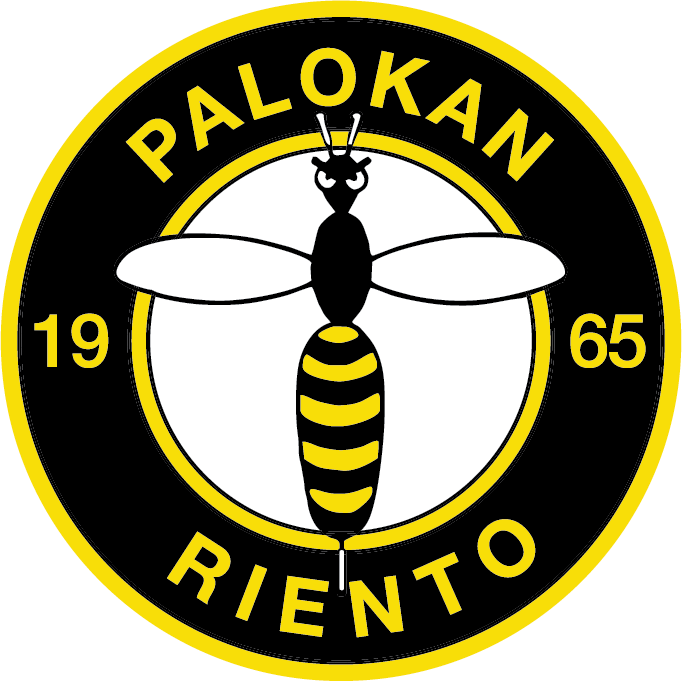

HeinäCup 2026
Talkooinfo
HeinäCup 2026
HeinäCup järjestetään 26.–28.6.2026 Jyväskylässä ja Laukaassa. Joukkueemme osallistuu turnaukseen ja meillä on kokonaisvastuu Kuokkalan kentästä – kenttähenkilökunta, kioski, opastus ja kaikki muu.
Jokaisen pelaajan vanhempi osallistuu
Talkootyö ei ole vapaaehtoista – jokaisen pelaajan vanhemmalta odotetaan osallistumista vähintään yhteen vuoroon. Yhdessä homma hoituu ja kukaan ei kuormitu liikaa.
Joukkueemme saa 8 € jokaista talkootuntia kohden suoraan joukkueen kassaan – rahat kattavat turnausmaksuja, leirejä ja varusteita.
📋 Ilmoittautuminen vuoroihin tapahtuu erikseen – linkki jaetaan WhatsApp-ryhmässä.
HeinäCup 2026
HeinäCup takes place 26–28 June 2026 in Jyväskylä and Laukaa. Our team is participating and we are fully responsible for running the Kuokkala field – staff, kiosk, signage, and everything else.
Every player's parent is expected to help
Volunteering is not optional – every player's parent is expected to take at least one shift. Together the workload stays manageable for everyone.
Our team earns €8 for every hour volunteered, paid directly into the team fund – covering tournament fees, camps, and equipment.
📋 Sign-up for shifts is handled separately – the link will be shared in the WhatsApp group.
Kentän talkooroolit – Kuokkala
Vastaa hänelle nimetyn kentän kokonaisuudesta ja toimii esihenkilönä koko henkilöstölle. On vastuussa kentän toimintojen suunnittelusta yhdessä turnauspäällikön kanssa.
- Kokonaisvastuu Kuokkalan kentän toiminnasta
- Toimii esihenkilönä kaikille talkoolaisille kentällä
- Suunnittelee kentän toiminnot yhdessä turnauspäällikön (Sami Perälä) kanssa
- Roolin voi jakaa kahdelle henkilölle
Field Manager: Responsible for the overall operation of the assigned field. Acts as supervisor for all field staff. Plans field operations together with the tournament director.
Vastaa hänelle nimetyn kentän kioskin kokonaisuudesta ja toimii esihenkilönä kioskitiimille. Hoitaa kioskitäydennykset ja yhteydenpidon kioskipäällikön kanssa.
- Kokonaisvastuu kioskin toiminnasta
- Toimii esihenkilönä kioskihenkilöille
- Hoitaa tuotetäydennykset
- Yhteydenpito kioskipäällikön (Sami Paavilainen) kanssa
- Roolin voi jakaa kahdelle henkilölle
Kiosk Manager: Responsible for the overall operation of the kiosk. Supervises the kiosk team, manages restocking, and liaises with the kiosk director.
Vastaa hänelle nimetyn pelikentän/-kenttien pelikunnosta ja toiminnasta.
- Vastaa pelipallojen sijoittelusta ja kunnosta
- Ohjeistaa ja opastaa joukkueita ja katsojia
- Puuttuu mahdolliseen häiriökäyttäytymiseen tai ilmoittaa siitä eteenpäin
Field Staff: Responsible for the playing condition of assigned field(s). Manages match balls, guides teams and spectators, and handles any disturbances.
Vastaa tuotteiden esillepanosta ja myynnistä.
- Tuotteiden esillepano ja myynti
- Seuraa tuotesaldoja yhdessä kioskivastaavan kanssa
- Vastaa koutsikahvilan täydennyksistä
Kiosk Staff: Handles product display and sales. Monitors stock levels together with the kiosk manager. Restocks the coaches' coffee area.
Vastaa kuulutuksista ja musiikin soittamisesta. Vastaa tuomareilta saamiensa pelitulosten syöttämisestä gameresults-järjestelmään (erillinen ohje).
- Kuulutukset kentällä
- Musiikin soittaminen
- Pelitulosten kirjaus gameresults-järjestelmään tuomareilta saatujen tietojen perusteella
Announcer & Results: Handles field announcements and music. Enters match results into the gameresults system based on information received from referees.
Ohjaa henkilöautot ja linja-autot merkityille parkkipaikoille. On aktiivisesti toivottamassa kentälle tulijoita tervetulleeksi – ensimmäinen kontakti kentällä.
- Ohjaa autot ja bussit parkkipaikoille
- Toivottaa tulijat tervetulleeksi – ensivaikutelma kentästä
Parking Guide: Directs cars and buses to designated parking areas. Actively welcomes arrivals – the first point of contact at the field.
Auttaa siellä missä tarvitaan. Ensimmäinen varahenkilö, jos talkoolaisia jää pois tai jossakin on vajausta.
- Päivän alussa: pysäköinnissä ja kenttien valmistelussa
- Päivän aikana: kioskin kiireapulaisena
- Päivän päätteeksi: purkamassa toimintoja
- Paikkaa tarvittaessa muita rooleja
General Helper: Helps wherever needed. First substitute if other volunteers are absent. Assists with setup, kiosk rush hours, and end-of-day teardown.
Koulun talkooroolit – Majoitus & ruokailu
Vastaa ruokailijoiden kulunvalvonnasta ja auttaa keittiöhenkilökuntaa esivalmisteluissa, loppusiivouksessa sekä mahdollisissa muissa tehtävissä.
Access Control & Kitchen: Manages access control for diners and assists kitchen staff with preparations, final cleaning, and other tasks as needed.
Tiskikoneen käyttö, astioiden ja ruokien täydennys ruokasaliin, pöytien pyyhkiminen sekä yleisestä siisteydestä ja ruokailun sujuvuudesta huolehtiminen. Esivalmistelu ja loppusiivous.
- Tiskikoneen käyttö
- Astioiden ja ruokien täydennys ruokasaliin
- Pöytien pyyhkiminen, yleinen siisteys
- Esivalmistelu ja loppusiivous
Kitchen Staff: Operates the dishwasher, restocks dishes and food in the dining hall, wipes tables, and maintains general cleanliness. Handles setup and final cleaning.
Majoittuvien joukkueiden vastaanottoon ja lähtöön liittyvät toimenpiteet, yleinen neuvonta, ovien avaaminen. Paikkojen siisteydestä huolehtiminen.
- Joukkueiden vastaanotto ja lähtö
- Yleinen neuvonta ja ovien avaaminen
- WC-tilojen ja suihkujen siisteys
- Hiljaisina aikoina muut tehtävät tarpeen mukaan
Access Control: Handles check-in and check-out of accommodated teams, general guidance, and door access. Maintains cleanliness of toilets and showers.
Yleisen järjestyksen ja turvallisuuden valvonta yöaikaan majoituskoulussa.
Night Watch: Monitors general order and safety during the night at the accommodation school.
* Lopullinen kenttäkokoonpano määrittyy joukkuemäärän mukaan. Rooleja ja vuoroja muokataan vielä myöhemmin.
Kenttäkartta – Kuokkala / Field Map
Kuokkalan kenttä · Pohjanlahdentie 7, 40520 Jyväskylä
Kenttäsuunnitelma / Field plan

Ilmakuva alueesta / Aerial view

Kenttäalue ja rakenteet / Field area

